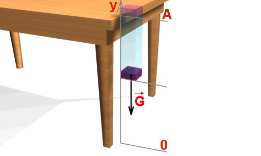
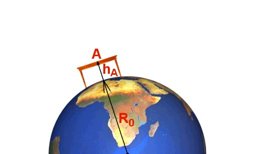
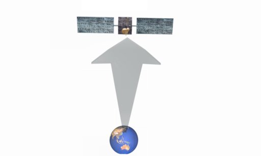
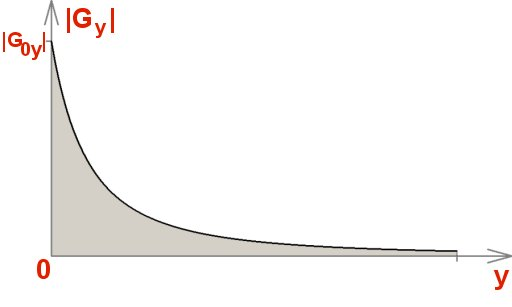
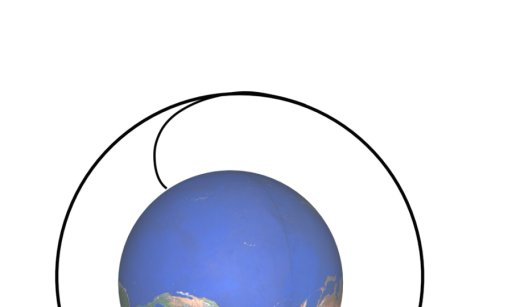
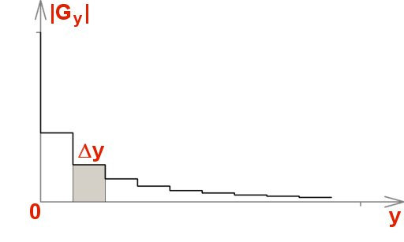
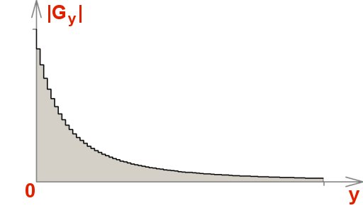
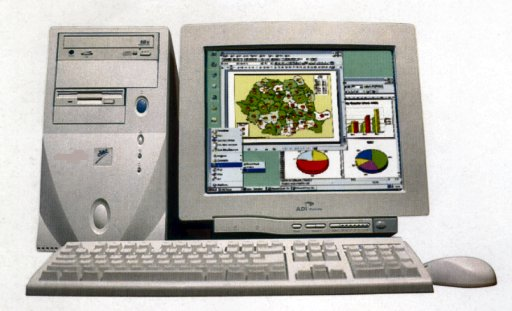

- Fig. 1
- Calculul lucrului mecanic efectuat de greutatea radierei, de la marginea mesei până la podea.
|

- Fig. 2
- Podeaua şi tăblia mesei se află la distanţe diferite faţă de centrul Pământului.
|

- Fig. 3
- Orbita sateliţilor geostaţionari se află la şase raze terestre de suprafaţa solului!
|

- Fig. 4
- Dependenţa de altitudine a proiecţiei greutăţii unui satelit pe axa altitudinii.
|

- Fig. 5
- Traiectoria de urcare şi de plasare pe orbită a unui satelit.
|

- Fig. 6
- Aproximarea cu fâşii dreptunghice a ariei delimitate de un grafic.
|

- Fig. 7
- Îmbunătăţirea aproximării prin "scurtarea" palierelor.
|

- Fig. 8
- Calculator electronic personal (PC).
|